Proximity-Voice für MSFS 2024 · P2P · kein Server
Free-Version — Pro-Key eingeben zum Freischalten
Noch kein Key? Pro (7,99 € einmalig) gibt es auf gsimulations.de. Unlimitierte Peers, Private Rooms, Supporter-Badge.
Für Streamer: automatisches Leiser-Regeln anderer Pilot-Stimmen wenn du sprichst (wie Discord-Ducking) plus ein transparentes Browser-Overlay für OBS.
http://127.0.0.1:7801/overlay.html?stream=1
Auf "Taste zuweisen" klicken, dann auf deinem Joystick / HOTAS / Yoke / Button-Box einen Knopf drücken. Funktioniert anschließend auch, wenn MSFS im Vordergrund ist.
Passphrase eingeben — alle Piloten mit derselben Passphrase landen im gleichen privaten Mesh (weltweit verbunden, kein Geohash).
Warte auf andere Piloten in deiner Nähe…